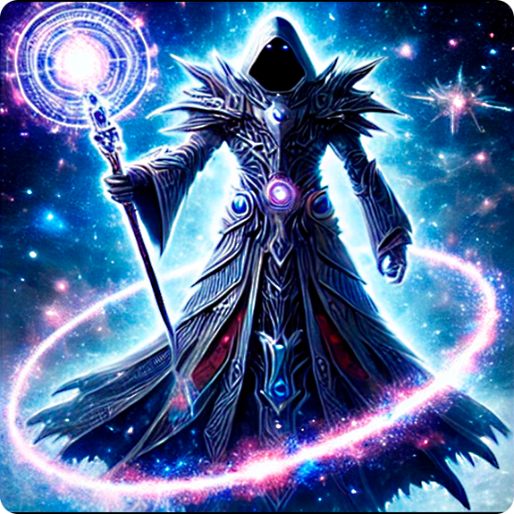

-
Cosmos Sentinel, Guardião Galáctico

Cosmos Sentinel é um guardião galáctico escolhido para proteger o equilíbrio do universo. Com poderes de manipulação de energia cósmica e viagens interdimensionais, ele enfrenta ameaças que desafiam as leis do cosmos, agindo como protetor solitário e mediador universal.
ATK/ 2800 DEF/ 2500 -
Nebuladragon, o Ser das Estrelas Eternas

Nebuladragon é uma entidade cósmica em forma de dragão, forjada nas estrelas eternas. Guardião dos segredos do universo, ele possui poderes vastos, como controle de nebulosas e criação de novas estrelas, protegendo a harmonia celestial de forças destrutivas.
ATK/ 3200 DEF/ 2000 -
Cyberblade Paladin, o Cavaleiro

Cyberblade Paladin é um cavaleiro futurista, armado com uma lâmina de energia cibernética. Defensor da justiça em um mundo tecnológico, ele combina habilidades de combate tradicionais com avanços tecnológicos para enfrentar ameaças mecânicas e digitais, protegendo a ordem e a liberdade.
ATK/ 2600 DEF/ 2300 -
Mechadragon X, o Destruidor Biomecânico

Mechadragon X é um dragão biomecânico projetado para destruição em massa. Com armaduras indestrutíveis e armas de energia avançada, ele é uma força imparável que mistura instintos predatórios com precisão tecnológica, devastando tudo em seu caminho.
ATK/ 3500 DEF/ 3000 -
Archmage Stellarion, o Guardião das Estrelas
Archmage Stellarion é um mago cósmico e guardião das estrelas. Mestre de magia estelar, ele manipula constelações e energias celestiais para proteger o universo de ameaças interdimensionais, mantendo o equilíbrio entre luz e escuridão.
ATK/ 2400 DEF/ 2600 -
Aegis Knight, o Guardião do Firmamento

Aegis Knight é um guerreiro celestial, portador de um escudo sagrado forjado nas profundezas do firmamento. Guardião eterno, ele protege os reinos cósmicos contra forças caóticas, canalizando a energia das estrelas para defender e preservar a harmonia universal.
ATK/ 3000 DEF/ 2800 -
Stormbringer Dragon, o Arauto das Tempestades

Stormbringer Dragon é um dragão elemental, arauto de tempestades e furacões. Com asas que geram ventos devastadores e um rugido que convoca trovões, ele é uma força imparável da natureza, trazendo caos ou renovação onde suas tempestades passam.
ATK/ 2900 DEF/ 2100